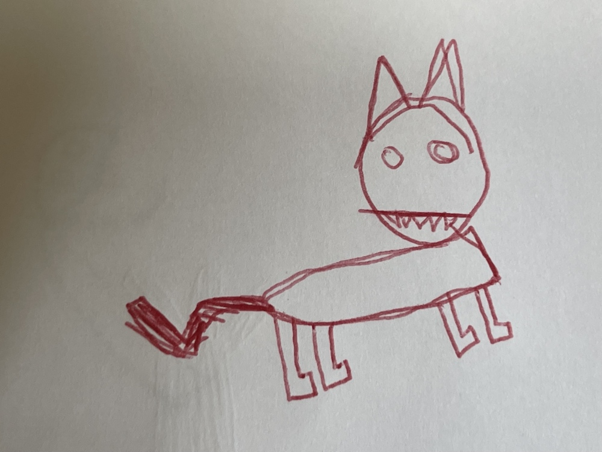

MS
-3000
PROGRAMMABLE ANALOG SEQUENCER
MASTER ROUTING
SEQ: FORWARD
SEQ: REVERSE
SEQ: PING-PONG
SEQ: RANDOM
CLOCK & BEND
PITCH BEND
TEMPO:
120
PLAY / STOP
SYNC
VCO 1 / VCF 1
MUTE
RANDOM
MODE: FWD
MODE: REV
MODE: PING
MODE: RAND
TRACK A
NOISE MIX
VCF CUTOFF
EG DECAY
OCTAVE
VCO 2 / VCF 2
MUTE
RANDOM
MODE: FWD
MODE: REV
MODE: PING
MODE: RAND
TRACK B
NOISE MIX
VCF CUTOFF
EG DECAY
OCTAVE
RHYTHM GENERATOR
MUTE
RANDOM
MODE: FWD
MODE: REV
MODE: PING
MODE: RAND
NOISE DECAY
KICK TUNE